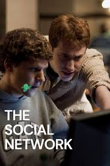
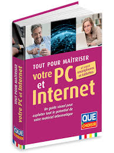

Mes Divertissements

Films
J'adore regarder des films, principalement des films de science-fiction et des thrillers.
Séries
Je suis un grand fan de séries, en particulier les séries dramatiques et policières.
Jeux Vidéo
Les jeux vidéo sont une de mes passions, surtout les jeux sportifs et d'aventure.
Musique
Écouter de la musique me permet de me détendre et de me concentrer dans mes projets.

Livres
Lire des livres sur la technologie et la philosophie est quelque chose que j'apprécie particulièrement.
Sport
Le sport fait partie de ma routine quotidienne pour rester en forme et actif.